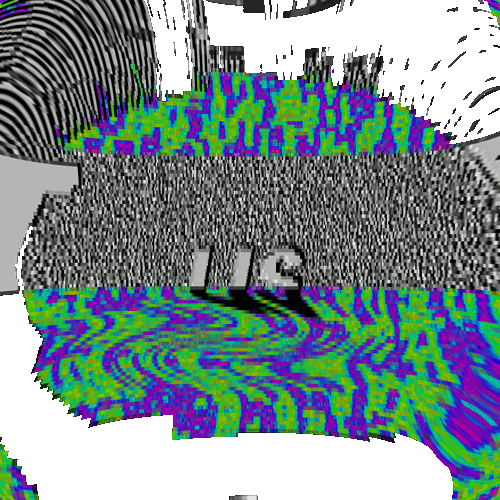

COLLECTED BY
Collection: Save Page Now
TIMESTAMPS

He sounds like a guy from avaturd. Check my last.fm and you will see that I actually have good taste compared to some of the fluffy lovers on this sub. You look like the headcrab from Half Life 1, do you shove chests up your ass aye? You like looking at kids playing in the sand porn aye? It's funny, because in Dub Techno artists, and in Encyclopedia Dramatica, they talk about omnidirectional reverberation, and they feed it to the masses, using some neural brainwash. For example, see Portal, see Bloodborne, the best ps4 game.
